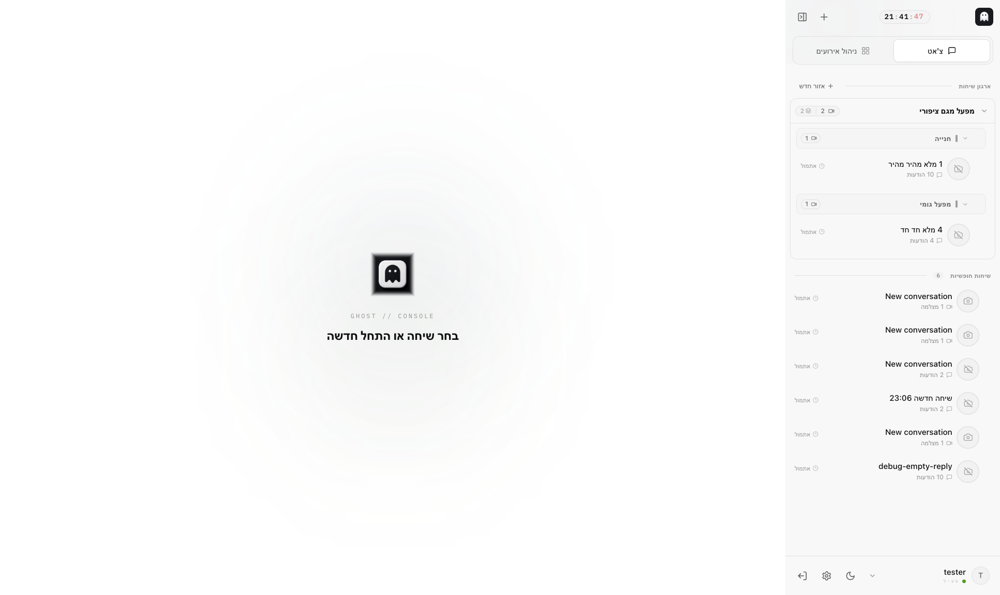

Show me the console exactly as I will see it.
Live console capture · unedited screen
This appendix is the visual companion to the Operator Training Program. Every page shows a real, unedited screenshot of the Ghost console, with numbered markers placed on the actual controls. The legend under each image tells you three things per marker: what to do, what it means, and what happens next. The console runs Hebrew, right-to-left — the conversations sidebar sits on the right, the chat fills the rest.

1 2 3 4 5 61
The operator clock — Local time with red seconds — your reference whenever you log an event time.
2
New conversation (+) — One press opens a fresh conversation — the basic unit of work in Ghost.
3
View tabs: צ'אט / ניהול אירועים — Chat is where you question cameras; Incidents is the case board. A counter badge shows cases waiting.
4
The organization tree — Areas contain camera groups, groups contain conversations — מפעל מגם ציפורי holds two groups here.
5
Free conversations — Anything not yet filed into an area. Keep this list short — file what you keep.
6
The footer strip — Active user, theme toggle, Settings and sign-out — identity and console controls in one row.
Every page: one real screen, one skill…
Ghost Academy · Operator Training Program · Visual Field Appendix · Confidential